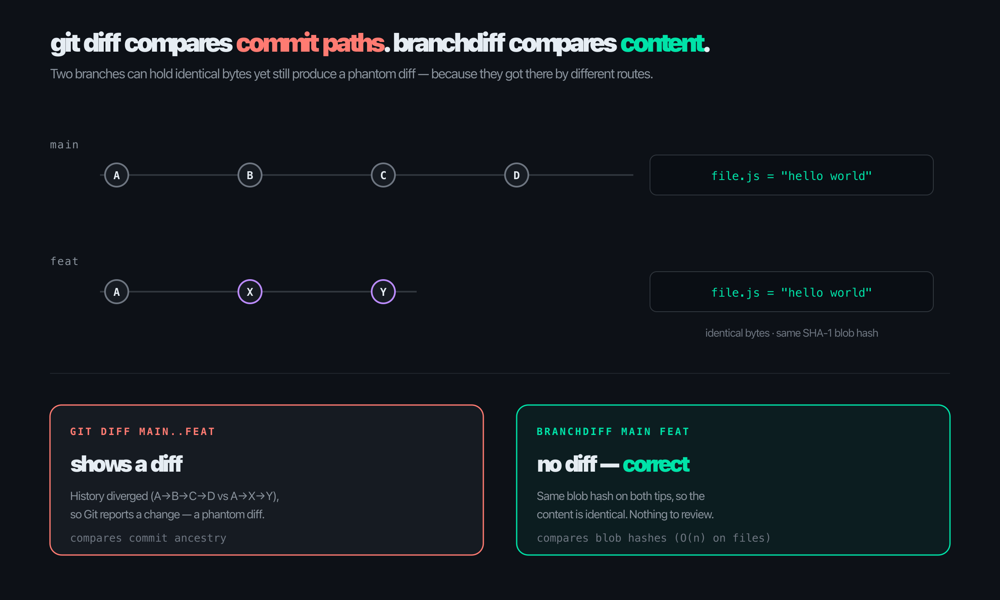
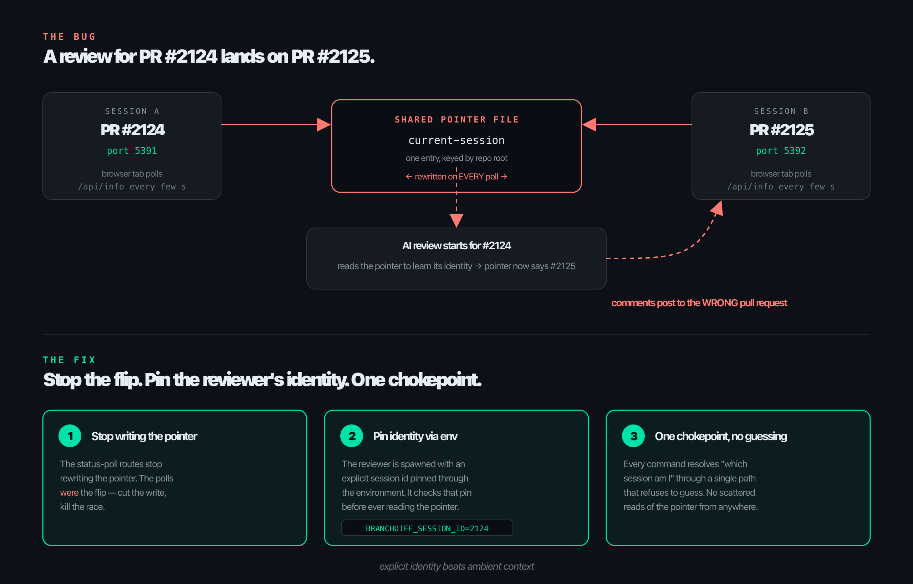
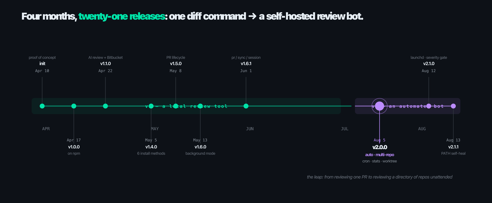

Deck 08 · the build story
How branchdiff grew up.
From one command that fixed a lie git diff was telling, to a self-hosted bot that reviews pull requests across a whole directory of repos while you sleep. This is the build story — why each piece exists, not a feature tour.
Apr → Aug 2026
21 releases
1 command → 1 bot
GitHub + Bitbucket
02 · the origin
git diff compares commit paths. branchdiff compares content.
Two branches can hold identical bytes and still produce a phantom diff — because Git's two-dot diff compares commit history, not file content. A rebase, a cherry-pick, a squash: Git reports a "change" where there is none. That phantom diff is the whole reason branchdiff exists.

Same SHA-1 blob hash on both tips → no diff. Comparing maps of hashes is O(n) on files, not on history.
03 · day one — a proof of concept
Deliberately small. Four flags.
The default compared actual content — the thing Git's own diff gets wrong. Tab-completion came free from the built-in readline; the whole thing was one local page reading the diff from disk.
terminal
$ branchdiff # interactive prompt, tab-completion
$ branchdiff feat # current branch vs feat
$ branchdiff main feat # two branches
$ branchdiff main feat --mode git # commit-history diff
A week later it was on npm as v1.0.0, renamed @encryptioner/branchdiff, licensed Commons Clause + MIT — open to use, not open to resell as a hosted product.
04 · every feature was a personal itch
No roadmap. Each version was a toe I kept stubbing.
The release notes read less like marketing and more like a diary of things that irritated me. Each feature starts with "I keep having to…"
- Comments had to land on real lines. Reviewing meant typing into a disconnected text box. So: inline threads that pin to exact lines — and an AI pass that drops comments on those same lines. v1.1.0
- Local work had to reach the remote PR. I'd write twelve careful comments, then retype them into GitHub. So: two-way sync — local pushes up, PR pulls back down. v1.2.0
- "I don't have Node installed." Every time I told someone to try it, that was the reply. So: six install methods — npm, PyPI, Homebrew, Scoop, apt, binaries. v1.4.0
- Approve and merge without leaving the terminal. The full PR lifecycle — approve, request changes, merge, close, reopen, mark ready — as CLI commands. v1.5.0
05 · the itch that became version 2
The unit of work is "my open PRs", not "this checkout's PRs".
I keep about ten side projects going at once. Each has its own repo, each occasionally has an open PR. Pointing auto at a directory replaced an entire morning of context-switching:
one line, ten repos
$ cd ~/work && branchdiff auto --tool claude
What it does: finds every open PR in every repo underneath, reviews only the ones with new commits since last time, and streams each session's URL as it goes. One numbered candidate list instead of ten terminals to reconcile by hand.
06 · auto, shaped by more toe-stubs
Each flag is a sentence that ends with "…so I added a flag".
- The 900-file lockfile bump wastes a pass. So does a one-word typo fix. Size is the cheapest signal — --max-files / --max-lines skip the giants and leave them to a human.
- I never want to review my own PR by accident. --skip-author.
- A foreground terminal only reviews while it stays open. No good for a headless box or a fixed daily window — so auto learned to detach and to schedule itself.
- I had no idea how much the tool had actually done for me. No telemetry, no summary. So stats was born — a dashboard over every local review database.
unattended
$ branchdiff auto --detach \
--review --tool claude \
--repo-paths ~/work --yes
$ branchdiff auto cron add \
--start "0 9 * * 1-5" \
--review --repo-paths ~/work
07 · the company angle — review at scale
The same command that reviews one PR reviews a hundred.
The only difference is which directory you point it at. That is what makes it a self-hosted review bot a team can actually run.
N repos
Multi-repo scan
One directory → every open PR found, reviewed, deduped.
cron
Runs unattended
Detach to the background, or schedule a fixed daily window.
2 forges
GitHub + Bitbucket
Both real forges, one UX. (Not GitLab — built what was needed, no more.)
any model
Bring your own
Claude, Codex, Gemini, Cursor, opencode — reads context on stdin, prints comments on stdout.
gate
Severity-gated
Auto-approve only if nothing crosses your threshold. A human still sees the rest.
stats
Visibility
A dashboard shows what got reviewed, by whom, how much it helped.
08 · the bug that taught me about identity
A review for PR #2124 landed on PR #2125.
Two sessions on the same repo, two ports. One shared current-session pointer — rewritten on every browser status poll. The other PR's tab, polling in the background, flipped the pointer mid-review. The fix: stop the flip at its source, pin the reviewer's identity explicitly, force one chokepoint.

explicit identity beats ambient context — the reviewer checks its own pin before it ever reads the shared pointer.
09 · other bugs, other lessons
Each bug left a habit behind.
- It hung people's machines. Synchronous Git calls blocked the single Node thread; on big repos the server froze, and on some setups the device hung on sleep. Habit: never block the hot path — go async, pass arg arrays (also closes a shell-injection door).
- cron silently did nothing on macOS. Since Catalina, macOS blocks cron unless it has Full Disk Access — and fails silently. Habit: distrust the platform's defaults; "works on my Linux box" is not a test. On macOS it now writes launch agents instead.
- Export and import were both broken — and silent. Server shipped bundles tagged v2; the import screen rejected anything but v1. The only live path was dead end to end, and nobody reported it. Habit: version your contracts out loud.
- "Request Changes" did nothing on Bitbucket. It posted to the comments endpoint instead of the dedicated request-changes endpoint — a wrong URL that looked like it worked. Habit: verify the side effect, not the call.
10 · where it landed
Four months, twenty-one releases.

the leap — from reviewing one PR to reviewing a directory of repos unattended
11 · the itch, again — this time it's the AI
Same wall of hunks. Different reader this time.
Once auto was reviewing unattended, the AI was still cold-reading every diff — no orientation, just a wall of hunks. That is the exact problem that started this whole project, except now it was the AI stubbing its toe instead of me.
Before
Every session opens the same way: burn real effort and real tokens just figuring out which of forty changed files matter, and how they connect, before saying anything useful about the change itself.
After
A change map, computed locally and deterministically before any AI ever sees the diff — zero AI tokens spent finding out what could just be computed.
Appended automatically once a diff crosses 3 files / 80 changed lines — and pulled up on demand from a toolbar button, for a human, without starting a review at all.
12 · the change map
One diagram, per wired section, before a single line of review.
- Which areas moved — and by how much.
- Which areas are wired together by imports — labeled with the actual new symbols the diff introduces, not just an import count.
- One coherent change, or several bundled into a PR — told apart automatically.
- The AI's own review comment now opens with that same diagram before its line-by-line findings.
0
AI tokens spent
The map is pure computation, not a model call.
$ / pass
Cost, made visible
stats now tracks tokens and cost per pass, split by tool and by repo.
13 · what building it taught me
The real payoff is the habits, not the features.
- Ship the itch you actually have. Features that scratched a real, recurring annoyance are the ones people thank you for; the clever planned ones mostly didn't survive contact with how I really work.
- Explicit identity beats ambient context. Any component that figures out "who am I" by reading a shared mutable thing has a race condition pretending to be a feature.
- Never block the hot path. If a request waits for a subprocess, it waits asynchronously — or not at all.
- Version your contracts out loud. Silent disagreement between two parts is the worst bug: it looks alive and is dead.
- Distrust the platform's defaults. macOS cron, sync APIs, 0.0.0.0 bindings — the convenient default is frequently the wrong one.
- Meet people where they are. "I don't have Node" killed adoption; six package managers was tedious and also the difference between a toy and a tool.
- Reuse your own commands. v2 was largely built by composing v1 commands as child processes — less code, fewer bugs, every fix inherited for free.
14 · recap
One stubborn idea, four months of Tuesdays.
branchdiff still does exactly what it did on day one — show you the real diff, not the phantom one. Everything else grew up around that single idea, each piece born from a friction I personally felt, over and over, until the friction was gone.
- Origin: git diff compares commit history; branchdiff compares content — no phantom diffs.
- Growth: every feature was a personal itch — comments, sync, six install methods, the PR lifecycle.
- Version 2: auto — one directory, every open PR, reviewed unattended, severity-gated.
- The bugs: a wrong-PR race, a frozen event loop, a silent macOS cron — each rewired how I build.